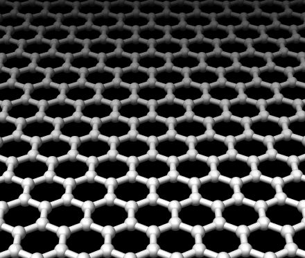
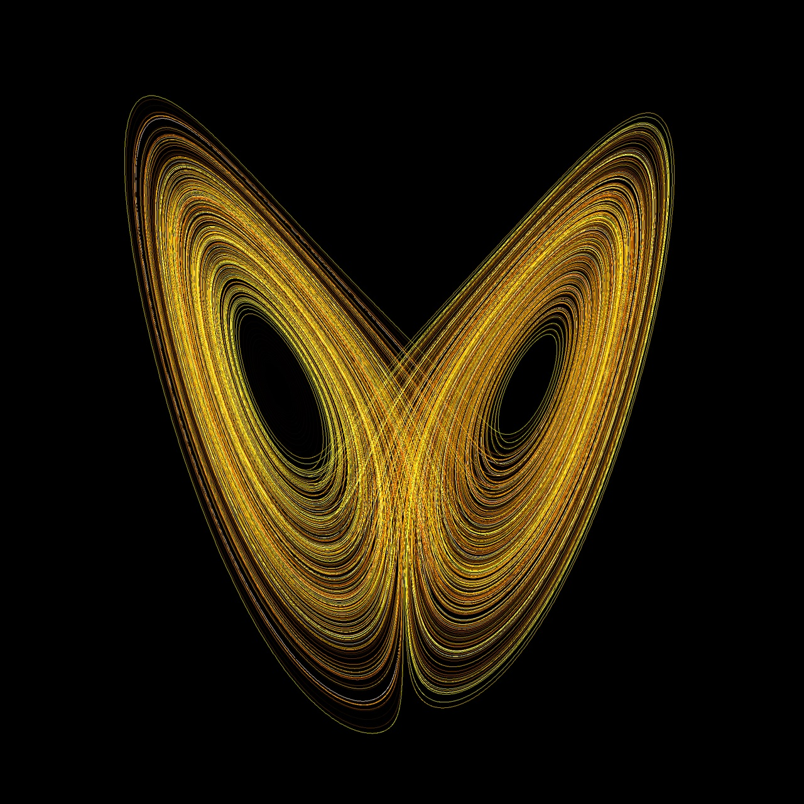
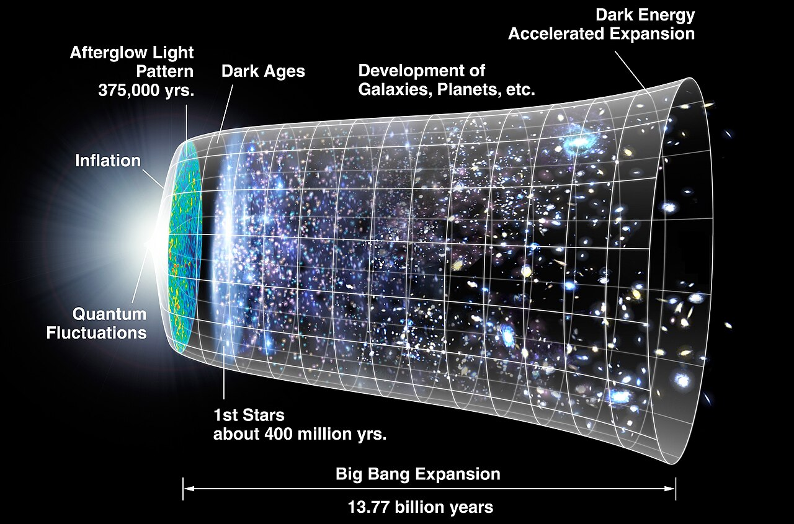

From foundations to higher topos theory.
Category theory, homotopy theory, geometry and algebra — written to connect.
All of mathematicsThe wiki for higher structures
Where researchers write down what they understand: densely cross-linked, carefully referenced, and free for anyone to read, cite and improve.
Today

The Hopf fibration presents the 3-sphere as a bundle of circles over the 2-sphere: every point of S² has a whole circle above it, and any two of those circles are linked.

Four talks — from excitons in bilayer graphene to M-theory on the four-sphere. Slides are online.
See the talks…that the nLab logo, by David Roberts, is inspired by Matisse’s La Gerbe — a nod to gerbes?
Definition 0.1 (the nLab)
A wiki for collaborative work on mathematics, physics and philosophy, built on one idea: that the links between pages are themselves a profound way to record knowledge.
Remark. Especially — but far from exclusively — from the higher structures point of view: homotopy theory, type theory and higher category theory.
Three fields · one web
Category theory, homotopy theory, geometry and algebra — written to connect.
All of mathematicsField theory, quantization, gauge theory and strings — from first principles.
All of physicsLogic, modalities and the philosophy of physics — the unity behind the formalism.
All of philosophyBeautiful ideas, explained in depth
The 3-sphere as linked circles over the 2-sphere.

The hidden dimensions of string compactifications.

Infinitely many congruent triangles in one disk.

The simplest knot that cannot be untied.

Order and chaos, like the Lorenz butterfly.

Atoms cooled until they act as one wave.

From quantum fluctuations to galaxies.
Anyone can contribute
Proposition. If you figured something out, the nLab is the place to record it. Proof.
Search or follow links. If it doesn’t exist yet, create it — the linking is the point.
Math in dollar signs, theorem environments, TikZ and XyMatrix diagrams.
Cite the literature, or give a proof or a sanity check.
Leave a short note on the nForum so others can follow and build on it.
How the Lab works
Nobody is in charge of the Lab. It was, and is, an exercise in open collaboration.
— from the nLab home page
Read, share and build on it — just acknowledge the source.
Every page keeps its full public history.
Others may use and improve them — trust runs both ways.
Every page can have a discussion thread.
Center for Quantum and Topological Systems · NYU Abu Dhabi
Fundamental questions about quantum systems — with a hallmark focus on stabilizing them through topologically ordered phases of quantum materials.
Strongly correlated matter like fractional quantum Hall systems, and topology-aware quantum programming.
Spin-based cold-atom platforms for quantum sensing and related, near-term technologies.
Can we have topological excitons in biased bilayer graphene?
Speakers from around the world on quantum materials, information and technology.
Full archiveRead it, cite it, improve it. The nLab grows every time someone writes down what they figured out.